ウミガメのギターとかを見て過ごす。
甲羅を見て「おー！これってギターにいいんじゃね？！」って思った人の、クリエイティブセンスに乾杯。
ウミガメのギターとかを見て過ごす。
甲羅を見て「おー！これってギターにいいんじゃね？！」って思った人の、クリエイティブセンスに乾杯。
{kind=link}
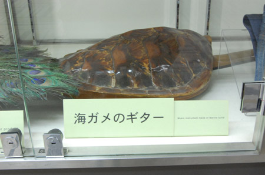
とゆーわけでJALに乗り込むわけですね。{kind=link}
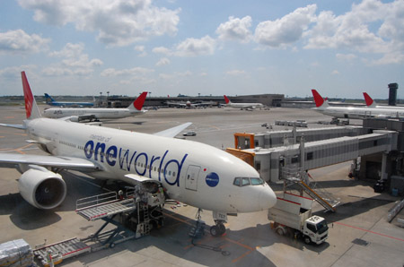
機内食は親子丼。ビールはエビス。ワインミニボトルもらう。{kind=link}
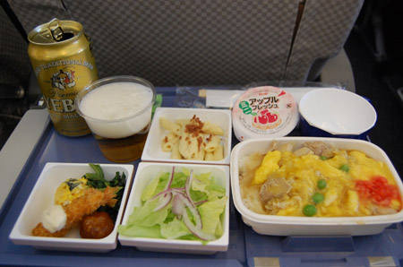
飛行機は2-3-2 映画「アリスインワンダーランド」を視聴。ワインのみのみ3時間。{kind=link}
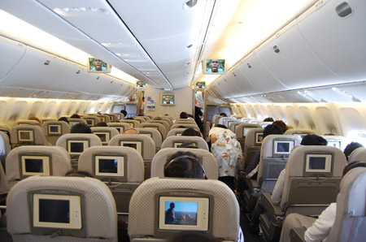
台北「桃園空港」はぴかぺか。すんごい磨き込んでいるなー。{kind=link}
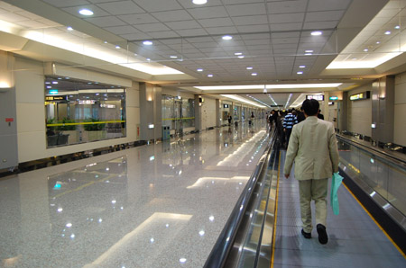
おでむかえ4人組。右から2人目のコ、頭大きいなー{kind=link}
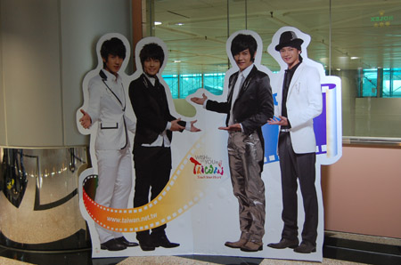
バス乗り場に向かう。巴士（バス）。台北駅まで125NTD(375円）{kind=link}
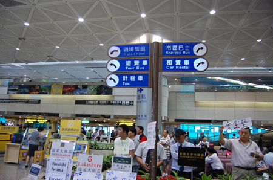
到着時は大雨～。梅雨入りしたての台北。 さすがの晴女力も、今回ばかりは難しいかなーと思って{kind=link}
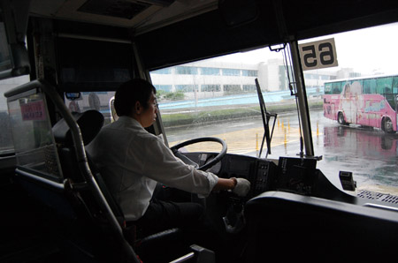
駅に着いたら、晴れた。 ものすんごく重厚な作りの駅だー。{kind=link}
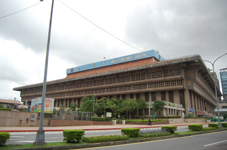
MRTに乗るため、地下に移動。 台北の公共施設はどこもかしこも清潔だわー。今回3回目だけど、来るたびにクリーンになってきている気がする。{kind=link}
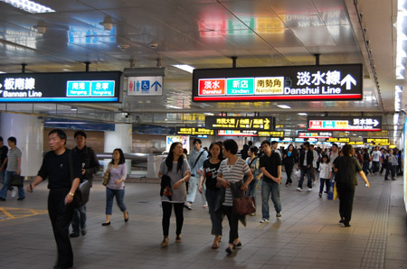
乗車券はきっぷではなくトークン。エコだわ。{kind=link}
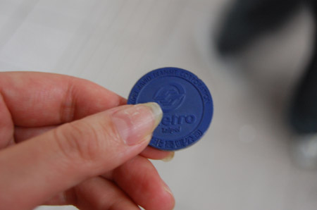
台北駅からいくつかめの駅に降りて{kind=link}
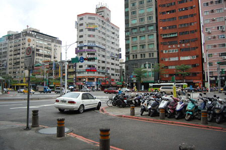
裏路地入ったとこの{kind=link}
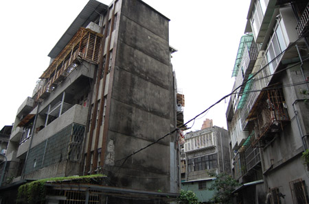
ドミトリーにチェックイン。 ネットでの紹介と実物とかなーりギャップがあったので、詳細はゴニョゴニョ…{kind=link}
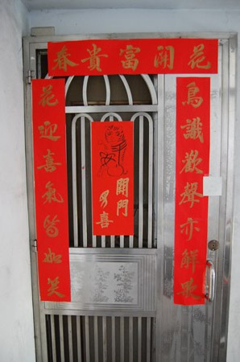
台北滞在中もiPhoneを使用したかったのでセブンイレブンでWiFiのプリペイドカード「Wifly」を購入する。 中国語チャレーンジ！と、試したモノの、まったく通じず、たまたま英語ができる人がお客さんでいたので、どうにか通訳をしてもらって購入。ネットで下調べしていたときは、カード型の商品で、裏側にIDとパスが記載されている感じだったのだけど、実際にはセブン専用端末を通してIDとパスワードを発行してもらう。 ペラペラのレシートをぺっと渡されたから、最初はなんのことやらさっぱり判らなかった。 こんなかんじ。{kind=link}
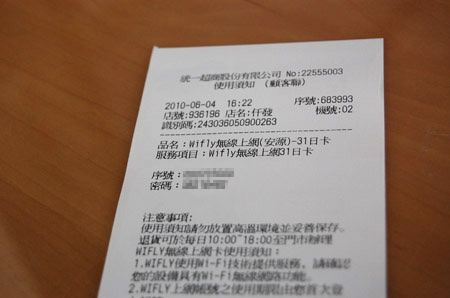
ブラウザを立ち上げるとログイン画面が立ち上がるので、発行されたID（帳號）,Pass（密碼）を打ち込んで「登入」。次ページでSMS送信用に携帯電話の番号を聞いてくるのでiPhoneの番号を入力。「8190xxxxxxxx」電話番号が090からの場合は、このような感じ。81は日本の国番号。 早々にSMSが来て、正式なパスワードを発行されるので、元のブラウザに表示されているパスワード入力画面に打ち込んで完了！ …と、ちまちまiPhone片手にセブンの飲食スペースで設定をしていたら、見知らぬおじ様が声をかけてきた。両手にビールで赤ら顔。ぺらぺらぺら～っと何かを言ってきたので、判らないと伝えると「ん？アメリカンか？！どこの国か？」と。「一緒に飲もう！ご飯たべさせたげる！」とジェスチャー絡めて言ってきた。 「ひー！」 もちろん、入国早々、ほいほい付いていくなんてできるわけもなく。 おじさま何度も手を振ってた。 でも、お腹が空いたなー。。。ということで 近くの食堂に。{kind=link}
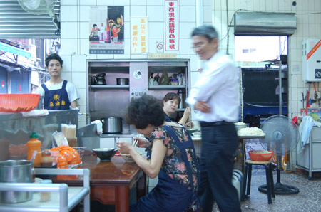
ルーローハン25NTD(75円） ここでも中国語（台湾語）が通じない。もう諦める。 お茶碗はもって食事するようしつけられていたから、中国式に置いたまま食べるのが難しいよー。しかも箸は鉄製のつるつるのやつだし。{kind=link}
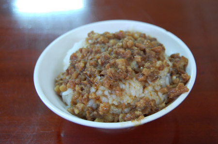
電車乗ったり{kind=link}
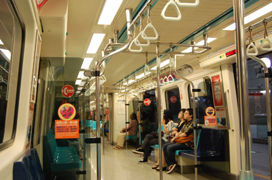
裏道をだらだら歩く{kind=link}
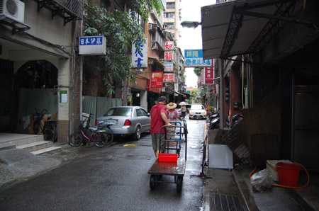
なんかどっかでみたことがあるよーなケーキが…{kind=link}
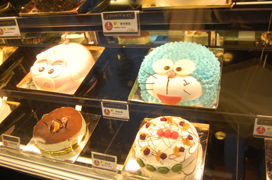
夜になったので士林夜市に。 食べ物の屋台が少ないなー…と思ったら、屋根付きの美食街が違うとこにあった… 帰り道に気がついてもーた。失敗したー。{kind=link}
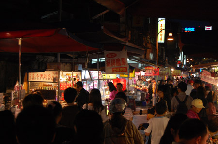
でもまー。こーゆー雰囲気を楽しむだけで十分なんだけどね。{kind=link}
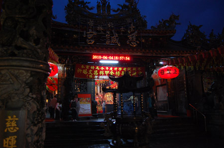
迷っていたら、ペット市場に遭遇したし。{kind=link}
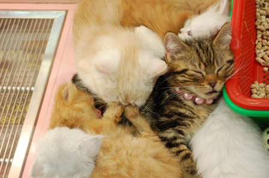
にゃんだよー！連れて帰っちゃうぞ！{kind=link}
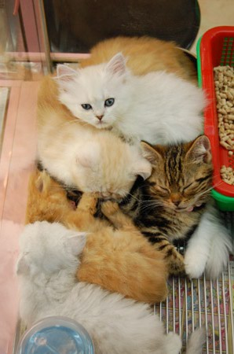
渡航先で猫を買って帰るってできるのかなー。 ちょっといいな。{kind=link}
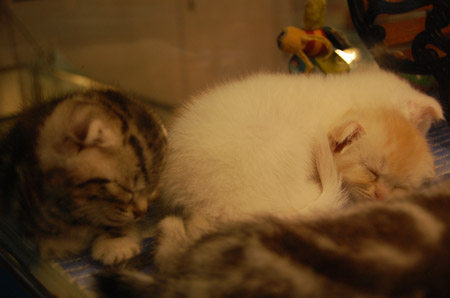
しかし、売れ残りのでっかい猫もわんさかいたなー{kind=link}
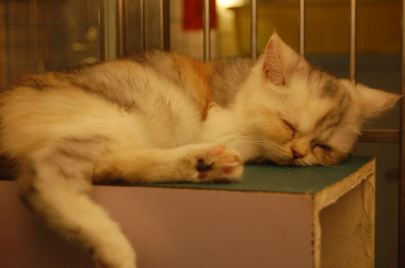